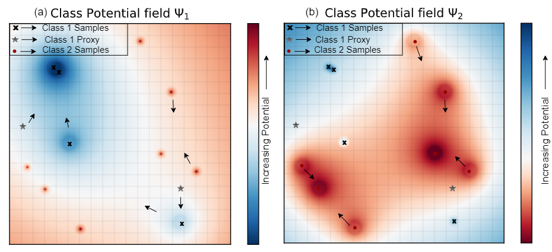
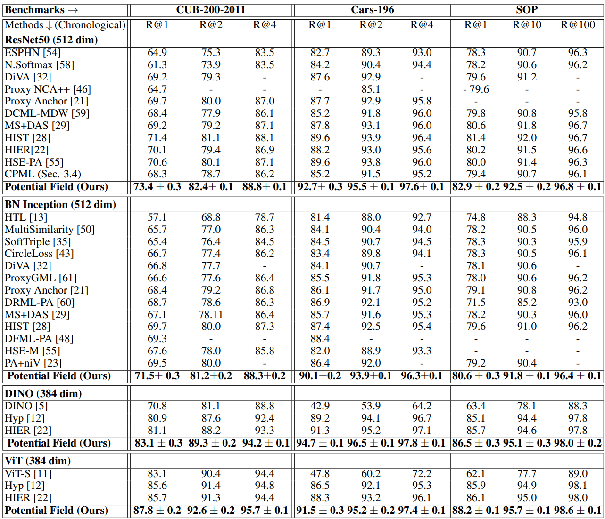
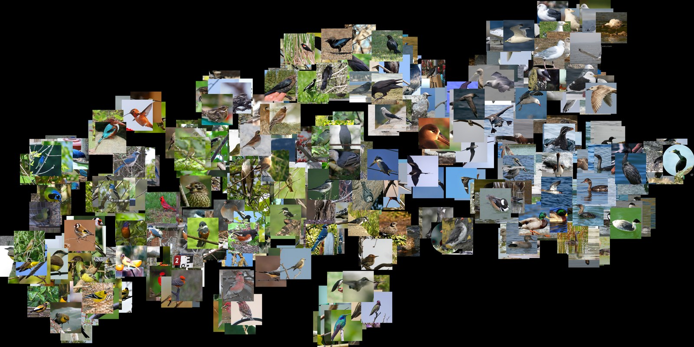
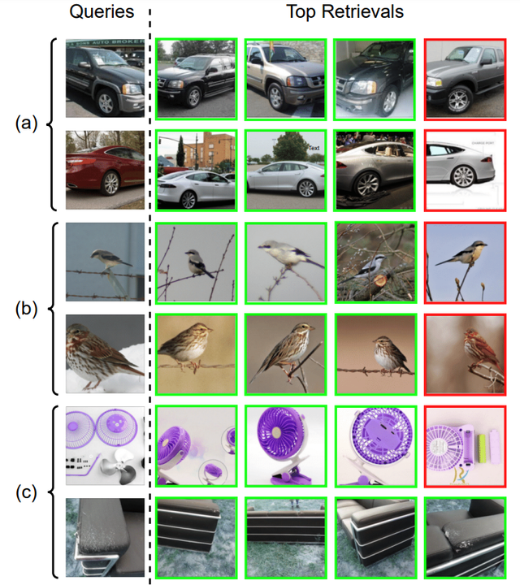

Instead of mining tuples, represent every embedding as a decaying,
electrostatic-style potential field and superpose them, giving a compositional model that is more robust
to large intra-class variation and label noise.
Each image is represented as a point (an embedding); shown here are two classes, blue and
red, in a 2-D toy space. Borrowing from electrostatics, PFML has every point create a field that
attracts points of its own class and repels other classes, with the influence weakening over
distance. The coloured surface is the combined field felt by the blue class (blue wells pull blue
points together, red regions push the other class away); following it, blue points gather with nearby
blue neighbours and separate from red, which is how PFML learns a space where similar images sit close
together.
Abstract
Deep metric learning (DML) involves training a network to learn a semantically meaningful
representation space. Many current approaches mine n-tuples of examples and model interactions within
each tuplets. We present Potential Field based metric learning (PFML), a novel compositional DML
model, inspired by electrostatic fields in physics that, instead of in tuples, represents the influence
of each example (embedding) by a continuous potential field, and superposes the fields to obtain their
combined global potential field. We use attractive/repulsive potential fields to represent interactions
among embeddings from images of the same/different classes. Contrary to typical learning methods, where
mutual influence of samples is proportional to their distance, we enforce reduction in such influence
with distance, leading to a decaying field. We show that such decay helps improve performance on real
world datasets with large intra-class variations and label noise. Like other proxy-based methods, we also
use proxies to succinctly represent sub-populations of examples. We evaluate our method on three standard
DML benchmarks: Cars-196, CUB-200-2011, and SOP datasets where it outperforms state-of-the-art
baselines.
TL;DR
Use a continuous potential field to represent interactions between a set of example embeddings,
instead of using subsets of examples (triplets/tuplets) or proxies.
Intuition
With our potential field representation, embeddings need to be driven towards other nearby
embeddings belonging to the same class, while also being driven away from embeddings of other classes.
This is reminiscent of the behavior of an isolated system of electric charges, where dissimilar charges
are drawn together while similar ones are repelled.

The same idea for both classes: Ψ1 and Ψ2 are the combined
fields for the blue and red classes, each obtained by superposing the attraction and repulsion of
every individual point. Arrows are the gradient of the field, i.e. the net force that moves a point.
Because the influence decays with distance, a point is drawn only to its nearest same-class
neighbours (and kept a small margin δ from the other class), not to far-away same-class points.
That decay is the key design choice: a distant outlier or a mislabeled image is treated as a
different variety instead of being dragged in, which gives PFML its robustness to large intra-class
variation and label noise.
Advantages of PFML vs previous DML approaches
Advantage #1
No complex mining needed. A continuous field models all interactions directly, avoiding the
high-complexity O(N³) tuple mining that pair-based losses rely on.
Advantage #2
Better features. All sample interactions are modeled at once, not just a small subset,
improving the quality of the learned representation.
Advantage #3
Label-noise resilience. Interaction strength decays with distance, so distant mislabeled
samples are de-emphasized and intra-class features are preserved.
Advantage #4
Better use of proxies. The decaying interaction keeps learned proxies closer (smaller
W₂) to the data distribution they represent.
Method
For each class, PFML defines a class potential field Ψ that affects embeddings of only
the selected class. This class potential field brings together embeddings of the class while pushing them
away from embeddings of other classes. The class potential field is formed from a superposition of
potentials belonging to individual embeddings from all classes. The potential field exerted by individual
embeddings is designed based on both the principles from electrostatics and observations from DML
literature. More details and exact definitions of the potential field can be found in Section 3 of our
paper.
Our Potential-field based DML pipeline includes (1) Computing attraction and repulsion fields
generated by each embedding and proxy, (2) Computing the class potential fields by superposition of
individual fields, (3) Evaluating total potential energy by summing up the potentials of embeddings
and proxies under the class potential field and (4) Updating locations of sample embeddings (through
network parameters) and proxies to minimize total potential energy through backprop.
Results
We evaluate our method on zero-shot image retrieval over 3 standard benchmarks (Cars-196,
CUB-200-2011 and SOP), training 4 different backbones (ResNet50, BN-Inception, ViT and DINO) for a fair
comparison with prior work.
SOTA
zero-shot retrieval on all 3 datasets and all 4 backbones
2×
the R@1 gain the previous SOTA (HIST) made over the method before it
+7.6
R@1 on Cars-196 under 20% label noise vs. the next-best method

Recall@K across CUB-200-2011, Cars-196 and SOP for four backbones; PFML is state-of-the-art
on all three datasets.
Robustness to label noise
Real-world labels are noisy. Under 20% random label corruption PFML degrades the least,
beating the next-best method (Proxy Anchor) by +6.0 and +7.6 in Recall@1.
Method
CUB-200-2011
Cars-196
R@1
R@2
R@1
R@2
Triplet
55.1
68.7
67.5
77.9
Multi-Similarity
58.9
71.8
70.4
79.8
Proxy NCA
60.1
74.7
74.3
82.4
Proxy Anchor (2nd best)
60.7
75.1
76.9
83.1
HIST
59.7
74.6
72.9
81.8
Potential Field (Ours)
66.7
76.9
84.5
88.6
Recall@1 and Recall@2 (%) under 20% random label noise, ResNet-50 backbone (512-dim),
averaged over 5 runs. PFML is the least affected, beating the next-best method (Proxy Anchor) by +6.0 and
+7.6 R@1 on CUB-200-2011 and Cars-196.
Visual results
t-SNE of the learned space

The figure shows a t-SNE visualization of the embedding space learnt by our method on the
CUB-200-2011 dataset. It can be seen that images closer together share more semantic characteristics
than those that are far apart.
Zero-shot retrieval

Example images retrieved by our method for query images from (a) Cars-196, (b) CUB-200-2011
and (c) SOP test datasets, in increasing order of distance from the query. Correct retrievals have a
green border, while incorrect ones have a
red one. Despite large intra-class variation
(pose, color) in the datasets, our method is able to effectively retrieve similar images.
BibTeX
If you find our work useful, please consider citing:
@InProceedings{Bhatnagar_2025_CVPR,
author = {Bhatnagar, Shubhang and Ahuja, Narendra},
title = {Potential Field Based Deep Metric Learning},
booktitle = {Proceedings of the IEEE/CVF Conference on
Computer Vision and Pattern Recognition (CVPR)},
month = {June},
year = {2025}
}